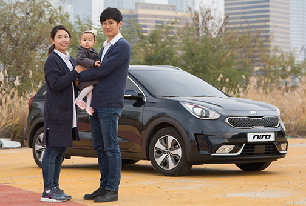
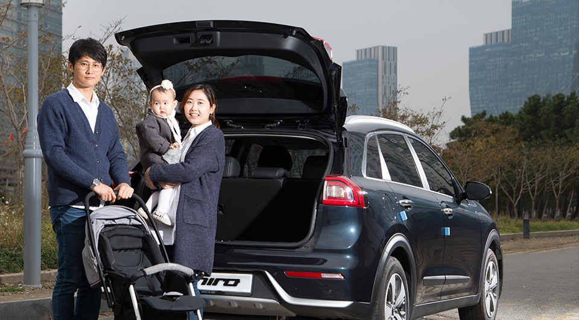
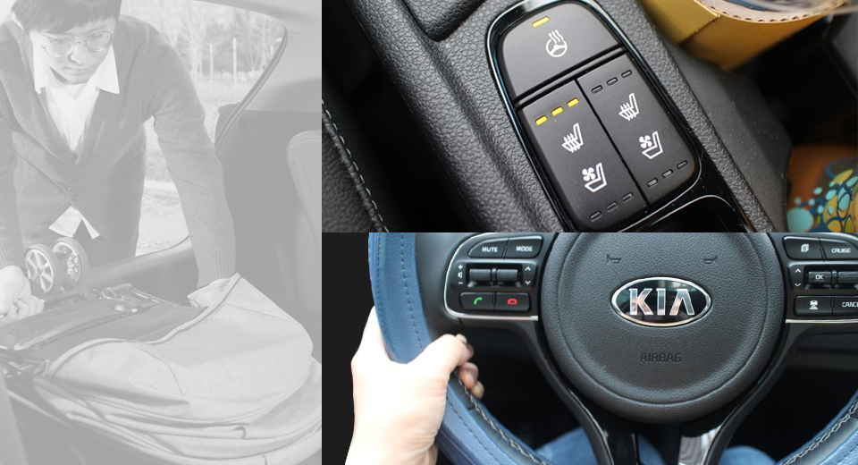
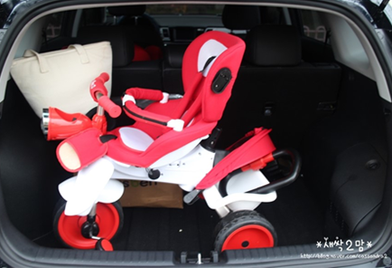
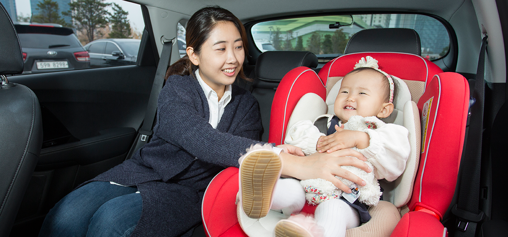
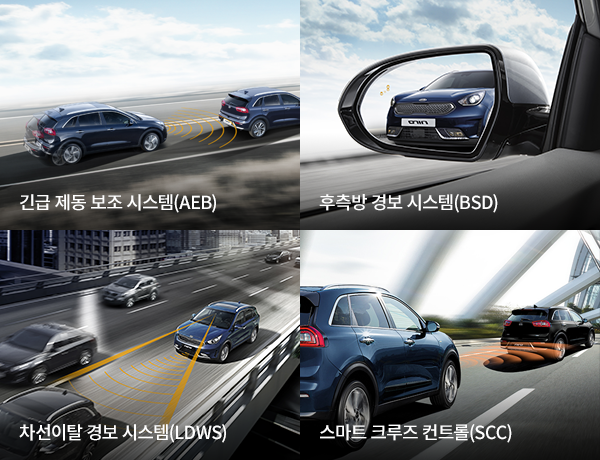
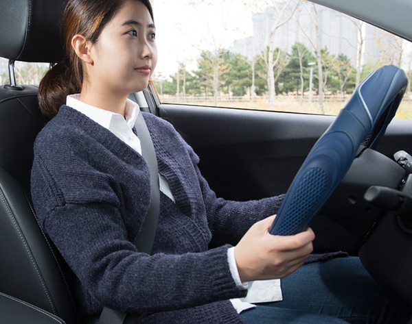
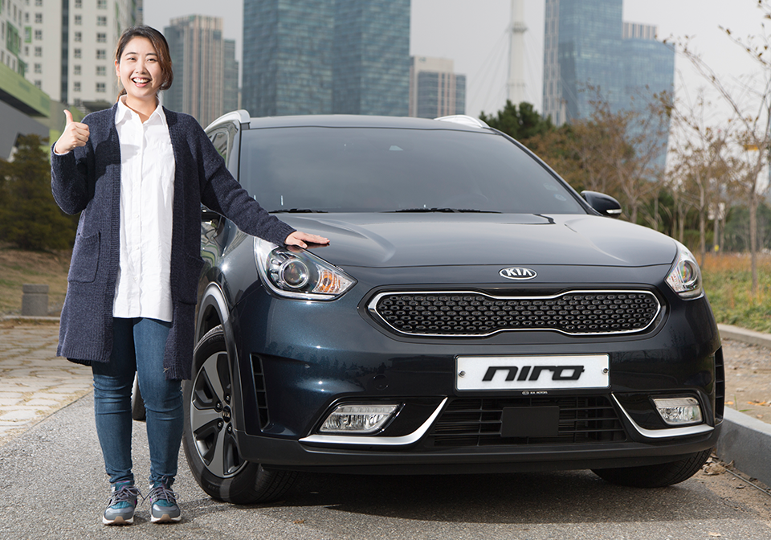

<section class="posting">
	<div class="box-content">
		<div class="inner-box dt4-box01">
			<div class="cnt-left">
				<h3>안녕하세요. <strong>니로와 함께<br>행복한 육아생활</strong>을<br>만들어가고 있는<br>새싹2맘입니다.</h3>
				<i></i>
			</div>
				<div class="cnt-right box-txt">
					<p class="txt">
						수많은 외출 육아용품 중, 엄마가 가지고 있으면 좋은 것이 자동차 아닐까요.<br>육아는 장비빨이라는 이야기도 있잖아요. 사실 저는 아이와 거의 매일 외출하는데, 대부분 자동차를 타고 나가게 됩니다.
						집에서 아이와 주로 다니는 곳이 지하철 두 정거장 정도 거리인데,  아이의 짐을 다 챙겨 다니려니 대중교통은 은근 불편하더라고요. 특히 날씨가 좋지 않으면 더욱 더 외출하기가 힘들고요.
						그래서 항상 자동차를 타고 이동하고 있어요. 올해 여름, 엄청난 고민 끝에 니로로 차를 바꿨답니다. 대학교 때 그린카의 전망, 하이브리드카의 전망에 대해 배운 적이 있는데 내가 하이브리드카의 오너가 되다니!
						차를 알아볼 때 남편과 저는 디젤SUV와 승용차를 놓고 고민하고 있었는데 시아버님께서 하이브리드카 니로를 추천해 주시더라구요.
						시부모님께서는 이미 하이브리드카를 소유하고 계신데, 몇 년 타보니 연비도 잘 나오고. 주행감도 좋다며 근거리 운전하기에 더 없이 좋은 차라고 강력 추천하시더라구요.
						하지만 새로 나온 차종이라서 선뜻 차를 구입하기가 쉽지 않았답니다. 그래서 니로에 대해 정말 검색도 많이 하고, 어떤 옵션을 넣을까 많은 고민을 했지요.
					</p>
					<p class="point">
						기능, 가격, 제원 등을 다른 차들과 비교 분석하여 고민 후
						중간급 트림인 프레스티지에 선루프와 드라이빙 세이프티 패키지까지 적용했답니다.
					 </p>
				</div>
		</div>

	<div class="box-content even">
		<div class="inner-box dt4-box03">
			<div class="cnt-right">
				<i></i>
			</div>
			<div class="cnt-left box-txt">
				<p class="qna-q">Q. 니로의 첫인상은 어땠나요?</p>
				<h3><strong>고요한 승차감</strong>이 인상적이었어요.</h3>
				<p class="hbg-txt">일단 차를 받고 주행해 보니 가장 먼저 드는 느낌은 정숙성!!</p>
				<p class="txt">특히 저속에서는 전기모터만 돌기 때문에 정말 너무 조용해요. 차 소리가 나지 않아서 사람들이 길을 터주지 않아 답답했던 때도 있을 정도라니까요! 
					어느날 니로를 타고 고속도로를 탔는데, 남편이 저와 대화를 하다가 갑자기 대박!! 이라고 외치는 거에요. 왜냐구요? 이전 차에서는 안 들린다고 크게 이야기할 때가 종종 있었는데 니로는 그런 일이 거의 없었거든요.
					저속이나 고속이나 조용한 니로, ‘하이브리드카가 이래서 좋구나’ 실감하고 있답니다.
				</p>
			</div>
		</div>
		<div class="inner-box dt4-box04">
			<div class="cnt-left">
				<i></i>
			</div>
			<div class="cnt-right box-txt">
				<p class="hbg-txt">다음으로 느낀 것은 편의성!</p>
				<p class="txt">아무래도 프레스티지 트림을 선택하니 편의성이 좋더라구요. 물론 한 급 높은 노블레스였으면 더 좋았을 테지만 이 정도면 충분히 만족합니다.
					1열 통풍 시트와 히티드 시트. 여름에 구입한지라 통풍 시트는 정말 최고였어요! 버튼은 기어 있는 곳에 위치하고요.
					프레스티지 이상에는 히티드 스티어링 휠까지 적용되어 있는데 요즘같이 추운 날 아침이나 저녁시간에 운전하게 되면 손이 시릴 때가 있는데 히티드 스티어링 휠 덕분에 손이 시리지 않아서 좋아요.
				</p>
			</div>
		</div>
	</div> <!-- end box-content -->

	<div class="box-content">
		<div class="inner-box dt4-box05">
			<div class="cnt-left box-txt">
				<p class="hbg-txt">패밀리카에 가장 중요한 공간!</p>
				<p class="point" style="margin-bottom:20px;">사실 처음엔 차를 보고 생각보다 작다, 낮다라는 느낌이 들었어요. 특히 전고가 낮은 편이라 여겼는데 막상 사용해보니 "SUV로서 이만하면 충분한 공간"라는 생각입니다. </p>
				<p class="txt">평소에는 휴대용 유모차와, 외출용품, 자동차 용품들, 힙시트와 가방 등을 싣고 다녀요. 요즘 아기들 타는 자전거도 가뿐히 들어가구요~! 예전 차에 싣고 다니려면 바퀴까지 다 분해해서 트렁크에 넣어야 했는데...
					너무 행복합니다. 그리고 친정이나 여행 갈 때면 기존의 짐 + 캐리어 + 각종 추가되는 짐까지!! 지난 추석 때도 시댁, 친정 선물 가득 싣고도 전혀 불편하지 않았답니다.
					애 하나 더 낳아도 이 차로 문제 없을 것 같아요. 그리고 뒷좌석! 뒷좌석의 레그룸도 널찍해요. 사실 요 부분이 작을 줄 알았지만 생각보다 엄청 넓어서, 뒷좌석에 카시트를 싣고도 어른 2명이 넉넉히 앉을 수 있답니다.
					키가 185cm인 남편도 편하다고 하니 말 다했죠? 주말에는 주로 남편이 운전하고 제가 뒤에 타는데, 전혀 불편함 없이 넓게 앉을 수 있어 좋아요.
				</p>
			</div>
			<div class="cnt-right">
				<p class="qna-q">Q. 니로에 가장 만족하는 부분은 무엇인가요?</p>
				<h3 style="padding-bottom:76px;">패밀리카에 무엇보다 중요한<br><strong>공간성</strong>입니다.</h3>
				<i></i>
			</div>
		</div>

		<div class="inner-box dt4-box06">
			
		</div>

		<div class="inner-box dt4-box07">
			<div class="cnt-left">
				<h3 style="padding-bottom:76px;">드라이빙 세이프티 기능<br>덕분에 <strong>아기와 함께 다닐 때도<br>마음이 놓여요</strong></h3>
				<i></i>
			</div>
			<div class="cnt-right box-txt">
				<p class="hbg-txt">5달 정도 타본 결과 니로의 정말 좋은 점은 첨단 사양으로 인한 안전성!</p>
				<p class="point">슈퍼비전 클러스터(4.2인치 컬러 TFT LCD 클러스터)<br>긴급 제동 보조 시스템(AEB) 스마트 크루즈 컨트롤(SCC)<br>후측방 경보 시스템(BSD) 차선이탈 경보 시스템(LDWS)</p>
				<p class="txt">바로 드라이빙 세이프티 패키지 덕분이에요~!! 니로 드라이빙 세이프티 패키지의 구성은 이렇습니다. 이 기능을 안 넣고 차를 받았다면 많은 후회를 했을 거에요..진심!! 이미 스크래치 한 번 냈을지도 몰라요.
					남편이 니로 카페를 자주 들어가서 보는데, 스크래치를 아내의 튜닝이라고 하더라구요.. 특히나 운전을 처음 하시는 분이나, 나는 운전이 무섭다 하시는 분들은 이 기능 꼭 넣는 게 돈 아끼는 거라고 생각합니다!!
					아무리 운전을 잘 한다 해도, 컨디션이 좋지 않을 때나 눈이나 비가 많이 오는 날은 운전하기가 쉽지 않잖아요. 저는 그래요... 그리고 특히 저는 항상 아기와 함께 다니기 때문에 드라이빙 세이프티 기능이 안전하다는
					느낌을 많이 받고 있답니다. 제가 특히나 좋았던 건 긴급제동! 앞차가 급정거할 때나 제가 앞차가 서 있는 것을 보고 브레이크를 조금 늦게 밟는 경우 긴급제동 보조 시스템(AEB)이 알아서 경고를 해주더라고요.
					고속도로에서 고속으로 달리다가 갑자기 차가 밀려 있는 구간이 있잖아요. 그때 경고 주는 것을 경험했는데, 혼자 "와우"라고 소리치며 놀라면서도 너무 좋았습니다.
				</p>
			</div>
		</div>
		<div class="inner-box dt4-box08">
			<div class="cnt-left box-txt">
				<p class="point">작은 충돌이라도 어린 아이에게는 위험할 수 있는데요<br>이런 점에서 우리 가족에게 있어서 니로는 너무나 든든하답니다. </p>
				<p class="txt">만약 아내 차로 구입하시는 것이라면 꼭 이 옵션 달아주시는 것을 강력 추천하는 바입니다. 그리고 다음으로 좋았던 기능은 후측방 경보 시스템 (BSD)입니다.
					아직 운전이 미숙해서 차선 변경시 조심스러울 때가 많은데 후측방 경보 시스템이 알아서 알려주니 저는 항상 충돌 위험에서 벗어나 있다는 생각이 들어요. 특히나 비 오는 날이면 더 좋은 기능이랍니다.
					이밖에 차선이탈 경보 시스템(LDWS), 스마트 크루즈 컨트롤(SCC) 등 니로에 있는 여러 안전 기능들 덕분에 장거리 운전을 가더라도 마음이 놓인답니다. 니로의 드라이빙 세이프티 패키지는 운전을 잘하는 운전자,
					못하는 운전자 구분 없이 꼭 달아야 한다고 생각합니다. 사고는 언제 어떻게 일어날지 모르는 일이잖아요.
				</p>
			</div>
			<div class="cnt-right box-txt">
				
			</div>
		</div> <!-- end box-content -->
	</div>
	<div class="box-content even">
		<div class="inner-box dt4-box09" style="height:672px;">
			<div class="cnt-right">
				
			</div>
			<div class="cnt-left box-txt">
				<p class="qna-q">Q. 실제 타면서 알게된 니로만의 매력은 무엇인가요? </p>
				<h3><strong>공인연비보다 훨씬 잘 나오는 <br>실연비요!</strong></h3>
				<p class="txt">그리고 “니로를 타면서 좋은 점이 뭐야?”라고 물으면 조금도 주저없이 “연비가 진짜 좋아요.” 라는 말이 튀어나온답니다. 정말 연비 너무 좋아요~!! 송도-청주(평일 오후 4시 운전시작,
					약간의 시내주행 포함)까지 연비를 측정해본 결과... 연비 운전하지 않았는데도 23.5Km/L가 나왔어요. 공인연비 보다 훨씬 잘 나오는 니로 덕분에 주유소 가는 횟수가 줄어들었어요.
					기름을 넣을 때마다 맞아.. 얘도 기름 넣는 차였지? 라는 생각이 들 정도라니까요. 이런 점들 말고도 정말 이것 저것 만족하는 부분들이 많은데, 그건 다음에 또 소개할게요.
					남편이랑 저는 정말 니로 선택한 것을 후회하지 않고 있답니다.
				</p>
				<p class="point">패밀리카를 찾거나 아이와 함께 차를 타고 이동해야 하는 경우가 많은 운전자라면 정말 괜찮은 니로, 강추에요!!</p>
			</div>
		</div>
	</div>
	<div class="pst-notice">
		<span>* 본 컨텐츠는 새싹2맘 님께서 2016년 6월 니로를 구입하고, 직접 운행한 경험을 토대로 작성한 시승기를 발췌 한 것이며, 컨텐츠 사용에 대한 사용료를 지불하였음을 명시합니다. </span>
	</div>
</section>
